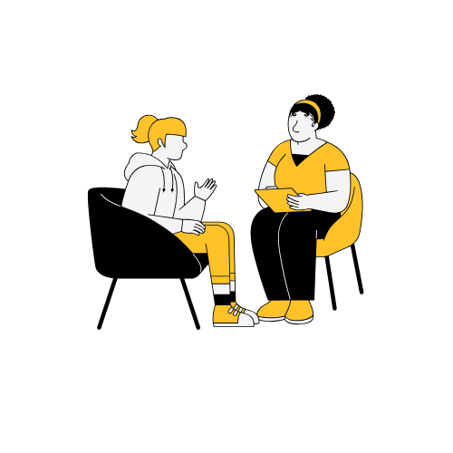
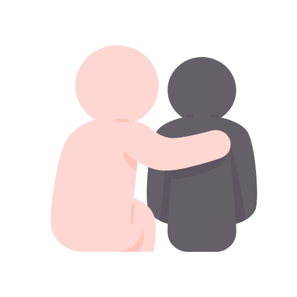
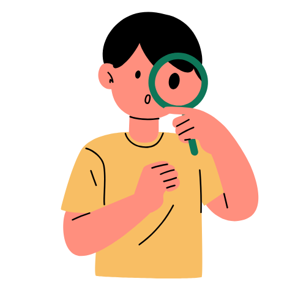

Quien soy

Profesional

Empatico

Más de 10 años de experiencia
Hola, soy el Dr. Juan Motta, psicólogo especializado en psico-oncología y salud mental. Con más de diez años de experiencia, mi misión es ayudar a las personas a enfrentar sus desafíos emocionales y mejorar su calidad de vida. Mi enfoque terapéutico se centra en la empatía, el respeto y la creación de un espacio seguro donde cada paciente se sienta escuchado y comprendido. Acompaño a mis pacientes en su camino hacia el autoconocimiento y el bienestar emocional, brindando apoyo en momentos difíciles y promoviendo el desarrollo personal y la resiliencia.
Más informacion